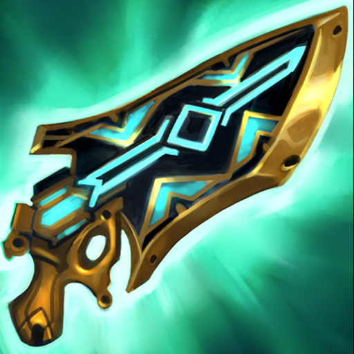

| 云顶之奕部分装备图鉴 |
| 装备名称 |
装备图标 |
装备效果 |
装备合成路线图 |
| 死亡之刃 |
 |
携带者获得50/75/100额外攻击力。(包含基础装备) |
|
| 巨人杀手 |
 |
携带者的技能和攻击额外造成20%的伤害。如果目标的最大生命值高于1600，造成的额外伤害会提升至60%。 |
|
| 海克斯科技枪刃 |
 |
来自携带者的技能的魔法伤害和真实伤害会治疗携带者，治疗量相当于的技能造成伤害的33%。携带者还会对生命值最低的友军提供等额的治疗效果。 |
|
| 朔极之矛 |
|
携带者的普攻在命中时回复额外法力，每次攻击的法力回复8 |
|
| 守护天使 |
|
阻止携带者的第一次死亡，将其置入凝滞状态作为替代。在2秒后，携带者会复活并具有400生命值，且已净化掉身上的所有负面效果。[唯一：每位英雄仅可装备一件] |
|
| 饮血剑 |
 |
携带者的普通攻击会治疗自身，治疗量相当于40%的普攻造成伤害。携带者首次跌到40%生命值以下时，会获得相当于30%最大生命值的护盾值，持续5秒。它仍然会提供生命偷取。 |
|
| 基克的先驱 |
 |
战斗开始时，携带者和站在同一排1格内的友军获得+30%攻击速度，持续至本回合战斗环节结束。 |
|
| 无尽之刃 |
 |
提供75%暴击几率(包含基础装备)，会将持有者溢出的每100%暴击几率转化为1%暴击伤害。 |
|
| 疾射火炮 |
|
使携带者的攻击距离提升1格，且给予50%额外攻速。 |
|
| 鬼索的狂暴之刃 |
 |
每次攻击增加6%的额外攻速，持续到战斗结束(可无限叠加) |
|
| 斯塔缇克电刃 |
|
携带者获得15%额外攻击速度。携带者的每第3次普通攻击会释放一道链状闪电，可弹射4名敌人，造成70魔法伤害并使目标的魔法抗性降低50%，持续5秒。 |
|
| 泰坦的坚决 |
 |
当携带者受到伤害或造成暴击时，获得可叠加的2攻击力和法术强度。这个效果最多叠加25次，且叠满后携带者会获得25护甲和魔法抗性。 |
|